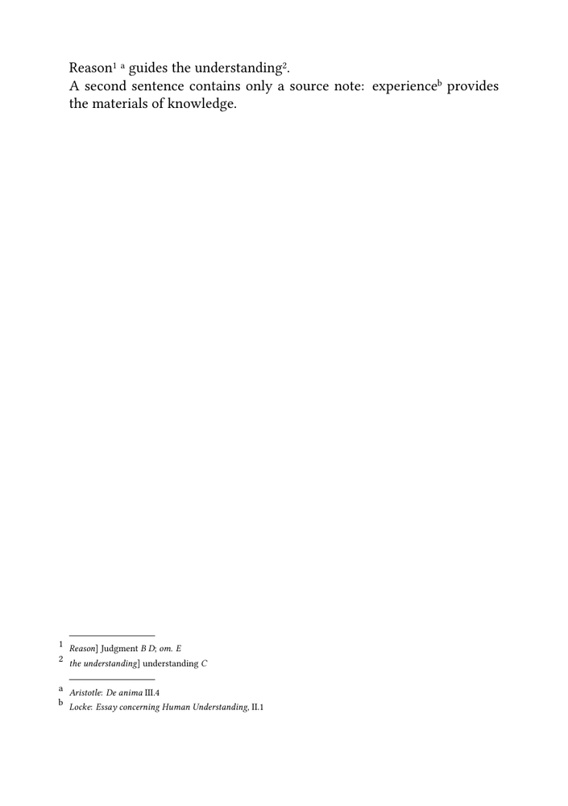
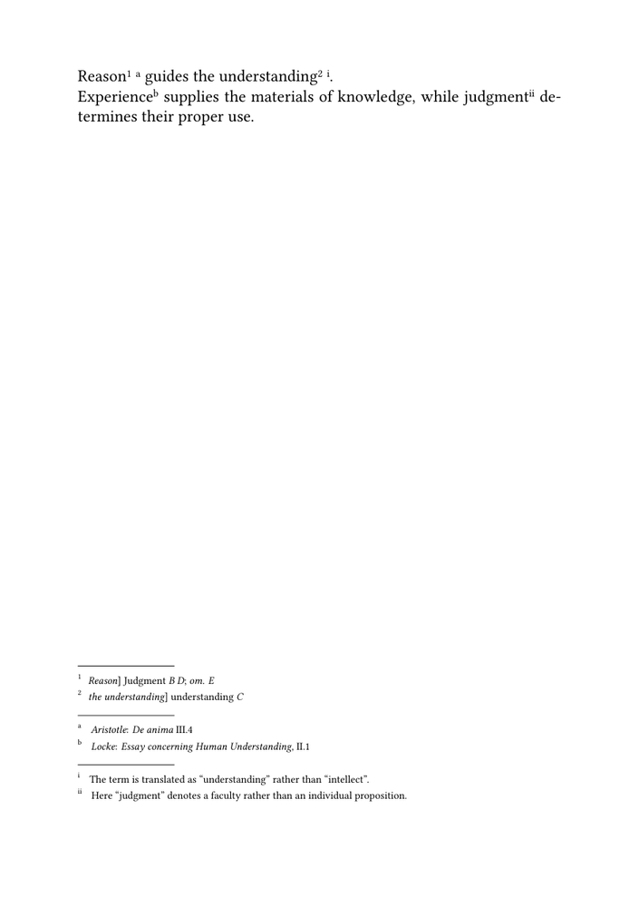

🚧 Work in progress. This guide is currently being drafted, corrected, and reviewed. Please do not modify the code unless this banner has been removed.
Critical apparatus guides: ← Guide 3 — Managing witnesses and textual variants · Orientation · Glossary · Guide 4 of 6 · Next: Guide 5 — Typesetting an original text and translation in parallel →
A critical edition may need more than one apparatus. Variant readings, sources,
translation choices, and discursive editorial comments do not answer the same
question.
One passage may require:
- a textual note recording that witnesses B and D read
Judgment;
- a source note identifying a parallel passage in Aristotle;
- a translation note explaining why one term has been rendered as
understanding rather than intellect.
Combining these observations in one long entry obscures their different functions. ConTeXt can instead represent each recurring class of annotation as an independent note series.
The progression is:
| Stage | Editorial problem | ConTeXt mechanism |
|---|---|---|
| 1 | Distinguish textual evidence from sources and commentary | Separate note series |
| 2 | Help the reader identify each layer | Distinct markers and styles |
| 3 | Attach several kinds of annotation to one passage | Adjacent layer-specific commands |
| 4 | Add translation commentary without merging it with the apparatus | A third note series |
| 5 | Reuse the architecture throughout a project | Shared environment file |
Core distinction. An apparatus layer is an editorial category. A ConTeXt note series is the mechanism used here to implement that category. The two terms are related, but they are not interchangeable.
Contents
- 1 1. Decide whether a separate layer is justified
- 2 2. Use explicit names
- 3 3. Define two independent layers
- 4 4. Give each layer a distinct marker and style
- 5 5. Build the textual and source interfaces
- 6 6. Attach two layers to the same passage
- 7 7. Compile a first two-layer example
- 8 8. Add a third layer for translation notes
- 9 9. Distinguish markers from labels
- 10 10. Keep ordinary footnotes independent
- 11 11. Reuse the setup in an environment file
- 12 12. Compile the complete three-layer example
- 13 13. Test representative pages
- 14 14. Understand the limits
- 15 15. Command summary
- 16 16. Choose the next guide
- 17 Online resources
- 18 Related pages
1. Decide whether a separate layer is justified
A separate layer is useful when a class of annotations has:
- a distinct and recurring scholarly function;
- a stable editorial vocabulary;
- a consistent marker system;
- a consistent typographical treatment;
- readers who may need to consult it independently.
Typical layers include:
| Layer | Main question answered | Typical contents |
|---|---|---|
| Textual apparatus | What textual evidence supports the constituted text? | variants, omissions, additions, corrections |
| Source apparatus | What sources, parallels, or allusions inform the passage? | quotations, parallels, source identifications |
| Translation notes | Why has the text been translated in this way? | alternatives, semantic difficulties, terminology |
| Editorial notes | What broader explanation does the reader need? | discursive commentary and editorial decisions |
Not every isolated annotation requires its own layer. An occasional source reference may remain an ordinary footnote. A recurring source apparatus deserves its own series.
Editorial principle. Create a separate layer because the notes serve a distinct and recurring function, not merely because another note series is technically possible.
2. Use explicit names
When several series exist, a generic name such as:
apparatus
becomes ambiguous.
Prefer internal names that state the editorial function:
textualapparatus sourceapparatus translationnotes
Likewise, prefer commands such as:
\variant \sourceparallel \translationnote
rather than:
\noteA \noteB \noteC
These names form part of the editorial model and should remain understandable when the source is revisited later.
3. Define two independent layers
Begin with a textual apparatus and a source apparatus:
\definenote [textualapparatus] \definenote [sourceapparatus]
ConTeXt creates one insertion command for each series:
\textualapparatus{...}
\sourceapparatus{...}
Place both at page level:
\setupnote [textualapparatus] [location=page] \setupnote [sourceapparatus] [location=page]
At this stage, both series are independent, but they still look similar.
4. Give each layer a distinct marker and style
The reader should be able to distinguish the layers immediately.
A simple design uses Arabic numbers for textual evidence and lowercase letters for sources:
\setupnotation [textualapparatus] [way=bypage, numberconversion=numbers] \setupnotation [sourceapparatus] [way=bypage, numberconversion=characters]
| Layer | Marker sequence | Suggested rhythm |
|---|---|---|
| Textual apparatus | 1, 2, 3, … | compact and abbreviated |
| Source apparatus | a, b, c, … | slightly more open |
Define separate styles:
\define\textualapparatusstyle
{\tfx
\setupinterlinespace[small]}
\define\sourceapparatusstyle
{\tfx
\setupinterlinespace[medium]}
Assign them independently:
\setupnotation [textualapparatus] [way=bypage, numberconversion=numbers, alternative=serried, width=fit, distance=.5em, style=\textualapparatusstyle, numberstyle=\tfxx] \setupnotation [sourceapparatus] [way=bypage, numberconversion=characters, alternative=serried, width=fit, distance=.7em, style=\sourceapparatusstyle, numberstyle=\tfxx]
Version check. Confirm the exact output of
numberconversion values with the ConTeXt release used for the
edition, especially when several note series employ different marker systems.
5. Build the textual and source interfaces
The textual layer can reuse the interface introduced in the earlier guides:
\define[2]\variant
{#1\textualapparatus{{\it #1}] #2}}
\define[2]\reading
{#1 {\it #2}}
\define[1]\omission
{{\it om.} {\it #1}}
Use:
\variant
{Reason}
{\reading{Judgment}{B D};
\omission{E}}
For the source layer, define:
\define[2]\sourceparallel
{\sourceapparatus
{{\it #1}: #2}}
Use:
Reason\sourceparallel
{Aristotle}
{{\it De anima} III.4}
guides the understanding.
The source command identifies an author or source label separately from the reference.
| Command | Function | Layer |
|---|---|---|
\variant
|
Attach textual evidence to a lemma | textual apparatus |
\reading
|
Format an alternative reading and its witnesses | textual apparatus |
\omission
|
Record omission of the lemma | textual apparatus |
\sourceparallel
|
Attach a source or parallel-passage reference | source apparatus |
6. Attach two layers to the same passage
A textual note and a source note may refer to the same word:
\variant
{Reason}
{\reading{Judgment}{B D};
\omission{E}}
\sourceparallel
{Aristotle}
{{\it De anima} III.4}
guides the understanding.
The adjacent commands create entries in different series.
Conceptually, the page contains three separate statements:
| Level | Content |
|---|---|
| Edited text | Reason |
| Textual evidence | Reason] Judgment B D; om. E |
| Source relation | Aristotle: De anima III.4 |
This is clearer than merging everything into:
Reason] Judgment B D; om. E; cf. Aristotle, De anima III.4
Separation of responsibilities. Two commands may annotate the same passage while preserving distinct editorial functions. Proximity in the source does not require the information to be merged into one entry.
7. Compile a first two-layer example
-
\mainlanguage[en] \setuppapersize[A5] \setupbodyfont [libertinus,11pt] \setuplayout [width=middle, height=middle, backspace=18mm, topspace=15mm, header=0mm, footer=10mm] \definenote [textualapparatus] \definenote [sourceapparatus] \setupnote [textualapparatus] [location=page] \setupnote [sourceapparatus] [location=page] \setupnotation [textualapparatus] [way=bypage, numberconversion=numbers, style=\tfx] \setupnotation [sourceapparatus] [way=bypage, numberconversion=characters, style=\tfx] \define[2]\variant {#1\textualapparatus{{\it #1}] #2}} \define[2]\reading {#1 {\it #2}} \define[1]\omission {{\it om.} {\it #1}} \define[2]\sourceparallel {\sourceapparatus {{\it #1}: #2}} \starttext \variant {Reason} {\reading{Judgment}{B D}; \omission{E}} \sourceparallel {Aristotle} {{\it De anima} III.4} guides \variant {the understanding} {\reading{understanding}{C}}. A second sentence contains only a source note: experience\sourceparallel {Locke} {{\it Essay concerning Human Understanding}, II.1} provides the materials of knowledge. \stoptext
-

This first MWE tests:
- two independent note series;
- two marker systems;
- two notes attached at the same point;
- a source note without a textual variant.
8. Add a third layer for translation notes
Define:
\definenote [translationnotes] \setupnote [translationnotes] [location=page]
Give it a third marker system:
\define\translationnotestyle
{\tfx
\setupinterlinespace[medium]}
\setupnotation
[translationnotes]
[way=bypage,
numberconversion=romannumerals,
alternative=serried,
width=fit,
distance=.7em,
style=\translationnotestyle,
numberstyle=\tfxx]
Define the interface:
\define[1]\translationnote
{\translationnotes{#1}}
Use:
understanding\translationnote
{The term is translated here as “understanding” rather than “intellect”.}
The three-layer design is now:
| Layer | Function | Example marker |
|---|---|---|
| Textual apparatus | Establish the edited text | 1, 2, 3 |
| Source apparatus | Identify sources and parallels | a, b, c |
| Translation notes | Explain translation choices | i, ii, iii |
The visual order of the collected series must be confirmed in the actual document. The order of definitions alone should not be treated as a guarantee for every page layout.
9. Distinguish markers from labels
Different marker systems are the core method. Short labels inside the entries are optional.
For proofing, one may define:
\define[1]\textuallabel
{{\bf var.}\space #1}
\define[1]\sourcelabel
{{\bf src.}\space #1}
and incorporate them into the interfaces:
\define[2]\variant
{#1\textualapparatus
{\textuallabel{{\it #1}] #2}}}
\define[2]\sourceparallel
{\sourceapparatus
{\sourcelabel{{\it #1}: #2}}}
The entries then begin with:
var. Reason] Judgment B D src. Aristotle: De anima III.4
| Technique | Status |
|---|---|
| Distinct marker systems | Core method |
| Distinct entry styles | Core method |
| Short labels in entries | Optional, especially useful for proofing |
| One automatic heading per non-empty page-note block | Advanced, project-specific placement problem |
Placement caution. A command executed before every notation entry is not
equivalent to a heading printed once before the complete collected block. Do
not use \setupnotation[before=...] for a layer heading unless
repetition before every entry is intended.
10. Keep ordinary footnotes independent
An edition may also contain ordinary explanatory footnotes:
\footnote{A discursive explanation intended for the general reader.}
These serve a different purpose from:
\textualapparatus{...}
\sourceapparatus{...}
\translationnotes{...}
| Series | Function |
|---|---|
| Ordinary footnotes | General explanation or commentary |
| Textual apparatus | Documentary evidence for the constituted text |
| Source apparatus | Sources and parallel passages |
| Translation notes | Translation choices and alternatives |
Their combined placement must be tested when several systems occur on the same page.
11. Reuse the setup in an environment file
A project should keep the shared layer architecture outside its textual components.
For example:
env-multiple-apparatus.mkxl
may contain:
-
the three
\definenotedeclarations; -
the
\setupnotesettings; - the layer-specific styles;
-
the
\setupnotationsettings; - the editorial interfaces.
Load it with:
\environment env-multiple-apparatus
The relationship is:
env-multiple-apparatus.mkxl
│
│ loaded by
▼
main.mkxl
│
├── edited text
├── textual variants
├── source annotations
└── translation notes
Practical consequence. The environment contains the shared architecture; the components contain the edited text and annotations. Changing the environment can therefore change the design of every component that loads it.
The detailed architecture of projects, products, components, and environments belongs to project management rather than to this guide.
12. Compile the complete three-layer example
-
\mainlanguage[en] \setuppapersize[A5] \setupbodyfont [libertinus,11pt] \setuplayout [width=middle, height=middle, backspace=18mm, topspace=15mm, header=0mm, footer=10mm] \definenote [textualapparatus] \definenote [sourceapparatus] \definenote [translationnotes] \setupnote [textualapparatus] [location=page] \setupnote [sourceapparatus] [location=page] \setupnote [translationnotes] [location=page] \define\textualapparatusstyle {\tfx \setupinterlinespace[small]} \define\sourceapparatusstyle {\tfx \setupinterlinespace[medium]} \define\translationnotestyle {\tfx \setupinterlinespace[medium]} \setupnotation [textualapparatus] [way=bypage, numberconversion=numbers, alternative=serried, width=fit, distance=.5em, style=\textualapparatusstyle, numberstyle=\tfxx] \setupnotation [sourceapparatus] [way=bypage, numberconversion=characters, alternative=serried, width=fit, distance=.7em, style=\sourceapparatusstyle, numberstyle=\tfxx] \setupnotation [translationnotes] [way=bypage, numberconversion=romannumerals, alternative=serried, width=fit, distance=.7em, style=\translationnotestyle, numberstyle=\tfxx] \define[2]\variant {#1\textualapparatus{{\it #1}] #2}} \define[2]\reading {#1 {\it #2}} \define[1]\omission {{\it om.} {\it #1}} \define[2]\sourceparallel {\sourceapparatus {{\it #1}: #2}} \define[1]\translationnote {\translationnotes{#1}} \starttext \variant {Reason} {\reading{Judgment}{B D}; \omission{E}} \sourceparallel {Aristotle} {{\it De anima} III.4} guides \variant {the understanding} {\reading{understanding}{C}} \translationnote {The term is translated as “understanding” rather than “intellect”.}. Experience\sourceparallel {Locke} {{\it Essay concerning Human Understanding}, II.1} supplies the materials of knowledge, while judgment\translationnote {Here “judgment” denotes a faculty rather than an individual proposition.} determines their proper use. \stoptext
-

Before publication, confirm:
- that all three series compile;
- that the markers remain distinct;
- that adjacent notes do not overwrite one another;
- that each style is applied to the intended series;
- the actual order of the collected note blocks;
- the interaction with ordinary footnotes.
13. Test representative pages
A multiple-layer design must be tested beyond one attractive demonstration.
| Test page | Textual apparatus | Source apparatus | Translation notes | Ordinary footnotes |
|---|---|---|---|---|
| A | yes | no | no | no |
| B | yes | yes | no | no |
| C | no | yes | yes | no |
| D | yes | yes | yes | yes |
| E | no | no | no | no |
Check:
- marker distinction;
- block order;
- continuation-line alignment;
- vertical spacing;
- crowding at the bottom of the page;
- behaviour when one layer is absent;
- page breaking;
- consistency on recto and verso pages.
Testing requirement. A design that works with two short notes may fail when all layers contain long entries. Base the final layout on representative pages from the real edition.
14. Understand the limits
Independent note series provide editorial separation, but they do not create a structured critical database.
They do not by themselves:
- sort entries by an external textual key;
- reorder records independently of source order;
- generate witness-specific reports;
- validate witness identifiers;
- decide automatically how several blocks share limited page space;
- create one conditional heading for each non-empty layer;
- represent overlapping textual ranges.
For sorting, filtering, and validation, see Managing structured critical data with Lua.
For original and translation in parallel, see Typesetting an original text and translation in parallel.
What this guide has established. Distinct editorial functions can be implemented as independent ConTeXt note series. Each layer can have its own name, marker system, typography, and editorial interface while remaining attached to the same passage.
15. Command summary
| Command | Purpose |
|---|---|
\definenote[textualapparatus]
|
Define the textual apparatus series |
\definenote[sourceapparatus]
|
Define the source apparatus series |
\definenote[translationnotes]
|
Define the translation-note series |
\setupnote[...]
|
Control placement and block-level behaviour |
\setupnotation[...]
|
Control markers and individual entries |
\variant
|
Attach textual evidence to a lemma |
\reading
|
Format an alternative reading |
\omission
|
Record omission of the lemma |
\sourceparallel
|
Attach a source or parallel-passage note |
\translationnote
|
Attach a translation note |
The editorial commands are defined by this guide. They are not predefined ConTeXt commands.
16. Choose the next guide
| Next task | Continue with |
|---|---|
| Build one simple apparatus | Guide 1 |
| Change its typography | Guide 2 |
| Declare witnesses and textual operations | Guide 3 |
| Compose an original text and translation in parallel | Guide 5 |
| Sort, filter, and validate critical records | Guide 6 |
| Process TEI XML critical data | Building critical editions from TEI XML |
Online resources
- Command/definenote — defining each note series;
- Command/setupnote — controlling placement and block-level behaviour;
- Command/setupnotation — assigning markers and entry styles;
- Footnotes — general note behaviour;
- Command/environment — loading shared definitions and settings.
Related pages
- Building a critical apparatus with ConTeXt
- Glossary of critical edition terms
- Building a simple critical apparatus
- Formatting a critical apparatus
- Managing witnesses and textual variants
- Typesetting an original text and translation in parallel
- Managing structured critical data with Lua
- Building critical editions from TEI XML
Critical apparatus guides: ← Guide 3 — Managing witnesses and textual variants · Orientation · Glossary · Guide 4 of 6 · Next: Guide 5 — Typesetting an original text and translation in parallel →